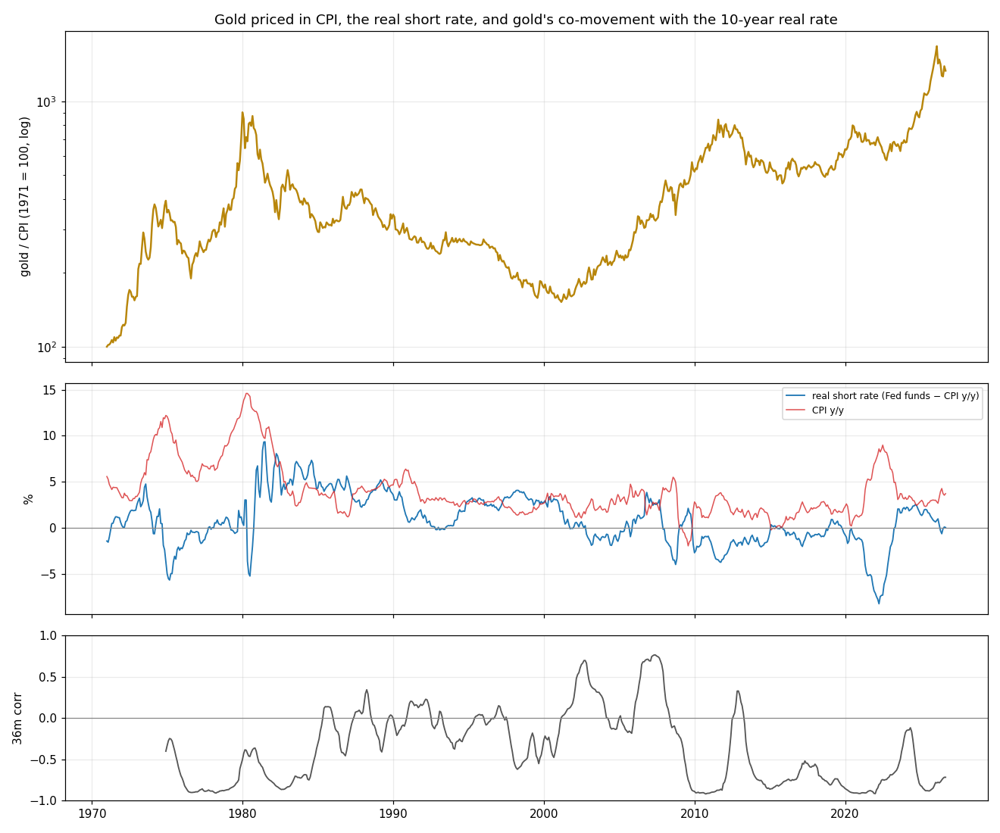

RS-XAUUSD-20261027-001 · XAUUSD · 2026-10-27
Gold against real rates, nominal rates and CPI since 1971 — no regime predicts the next year, the level link broke in 2022, and gold is near its most expensive ever in CPI terms
1971 年以來的月資料裡，實質短率、它的方向、聯準會升降息或 CPI 高低，能不能分辨黃金接下來 12–24 個月？黃金和 10 年實質利率怎麼一起動？歷史上哪幾個月最像現在？
Headline Metrics 關鍵數字
Key Findings 重點發現
沒有任何利率或通膨環境能分辨黃金接下來 12 或 24 個月
11 個分組、668 個月。實質短率 > 2%：12 個月中位數 −0.85%（233 個月、12 段）；0–2%：+19.03%（176 個月）；與全體平均的差 −7.08、+14.64 個百分點，門檻 20.11、22.85，分不出來。升息期反而比降息期好（12 個月平均 +21.66% 對 +9.21%），跟教科書相反，也在門檻內。
按年變化來看，黃金仍然和實質利率反向
黃金 12 個月漲跌 對 10 年實質利率 12 個月變化，36 個月滾動相關係數：2026-09 為 -0.716；全期 -0.455（656 個月）。1990 年代 -0.08、2000 年代 0.067 幾乎無關，2010 年代 −0.70。這是同期關係，只能描述，不能預測（K-MAC-002）。
價格水準和實質利率的關係在 2022 年斷了：金價比 2006–2021 的關係高 281%
探索性。用 2006–2021 年（n=192，R² 0.763）的關係：實質殖利率每高 1 個百分點，扣通膨後金價約低 22%；那段期間最大偏離 40.6%。照這個關係，10 年 TIPS 2.64% 對應金價約 1,126，實際是 4,287（2026-09）。偏離從 2021-12 的 −13%，到 2023-10 的 +84%，到現在 +281%。決定價格水準的已經不是實質利率（常見的解釋是 2022 年起的央行買盤），但漲跌方向仍跟著實質利率變化走。
扣掉通膨後，黃金在自己歷史的第 98.8 百分位；過去進入前 10% 之後兩種結果都有
金價÷CPI 的百分位（只用過去資料）2026-09 為 98.8（2026-01 為 100）。1975 年起 5 次進入前 10%，24 個月後實質報酬：1975 −33.7%、1978 +154.8%（漲到 1980 高點）、2008 +15.2%、2016 −13.3%、2019 +20.5%。所有在前 10% 的月份，24 個月實質中位數 +2.11%（145 個月，約 6 個獨立樣本），差 −4.17，門檻 55.04。
跟現在最像的 5 個月：一年後 2 次漲、3 次跌
現在（2026-09）：金價÷CPI 第 98.8 百分位、離月收盤高點 −18.8%、實質短率 +0.04%（聯邦基金 3.75%、CPI 3.71%）、實質短率一年降 1.55 個百分點、聯準會近 6 個月持平、黃金一年 +24.3%。最像的：2020-02（12 個月 +9.4%）、2016-07（−6.0%）、2010-03（+29.2%）、1987-11（−12.5%）、2012-03（−4.3%，24 個月 −22.5%）。只有 5 個樣本，是提醒不是預測。
Chart 圖表


最像現在的 5 個月，與之後 6／12／24 個月的報酬
| 2020-02 | 0.818 | 92.52 | -13.31 | -1.02 | -1.93 | 2.6 | 19.38 | 23.96 | 9.36 | 19.08 |
|---|---|---|---|---|---|---|---|---|---|---|
| 2016-07 | 1.139 | 90.16 | -26.12 | -0.69 | -0.64 | 1.08 | 23.3 | -11.79 | -6.04 | -9.44 |
| 2010-03 | 1.159 | 95.45 | -6.04 | -1.99 | -2.16 | 2.15 | 19.89 | 17.2 | 29.19 | 50.81 |
| 1987-11 | 1.218 | 81.4 | -30.61 | 2.33 | -2.14 | 4.36 | 24.56 | -7.05 | -12.47 | -13.51 |
| 2012-03 | 1.231 | 97.44 | -8.73 | -2.77 | -0.78 | 2.9 | 16.73 | 6.13 | -4.32 | -22.46 |
扣通膨後進入歷史前 10%，之後 24 個月
| 1975-01 | 176.05 | 91.8 | -4.97 | 12.1 | -33.72 | -25.42 |
|---|---|---|---|---|---|---|
| 1978-09 | 217.1 | 92.4 | 0.59 | 7.86 | 154.75 | 221.63 |
| 2008-01 | 913.5 | 92.8 | -0.17 | 4.11 | 15.18 | 18.4 |
| 2016-07 | 1,350.91 | 90.2 | -0.69 | 1.08 | -13.34 | -9.44 |
| 2019-07 | 1,418.69 | 90.1 | 0.73 | 1.67 | 20.54 | 27.83 |
價格水準和 2006–2021 實質利率關係的偏離（探索性）
| 2021-12 | 1,828.39 | -0.99 | 2,099.32 | -12.9 |
|---|---|---|---|---|
| 2022-10 | 1,641.76 | 1.59 | 1,259.54 | 30.3 |
| 2023-10 | 2,005.78 | 2.41 | 1,088.85 | 84.2 |
| 2024-06 | 2,325.71 | 2.05 | 1,202.26 | 93.4 |
| 2025-06 | 3,274.25 | 2.09 | 1,220.95 | 168.2 |
| 2026-01 | 4,865.35 | 1.91 | 1,291.85 | 276.6 |
| 2026-09 | 4,287.25 | 2.64 | 1,126.23 | 280.7 |
詮釋與實務意義
利率和通膨的環境不能告訴你黃金明年會怎樣：每一個分組都在門檻內，有些還和教科書相反。能用的是兩件事。第一，同期來看，實質利率上升的那一年黃金通常比較弱（相關 −0.72）；今年 1 月到 9 月 10 年 TIPS 從 1.91% 升到 2.64%，正好和這次回檔同步。所以要看的是實質利率接下來的方向，而不是水準。第二，價格水準已經不是實質利率決定的：照 2006–2021 年的關係金價應該在 1,100 左右，實際高出近 3 倍。這個差距是誰撐起來的（央行買盤），就是最大的風險來源；如果那個買盤減弱，沒有利率面的底可以接。扣通膨後黃金在歷史第 98.8 百分位，過去在這個位置之後兩年，結果從 −34% 到 +155% 都有。
限制與注意事項
- 月資料；12／24 個月視窗重疊，每組只有約 14–36 個獨立觀察。
- 2003 年前用事後實質利率（10 年公債 − CPI 年增率），之後用 TIPS，兩者不是同一種量法。
- 價格水準偏離那一段是看過資料後才加的，屬探索性。
- 相似月份只有 5 個，標準化用了全期資料。